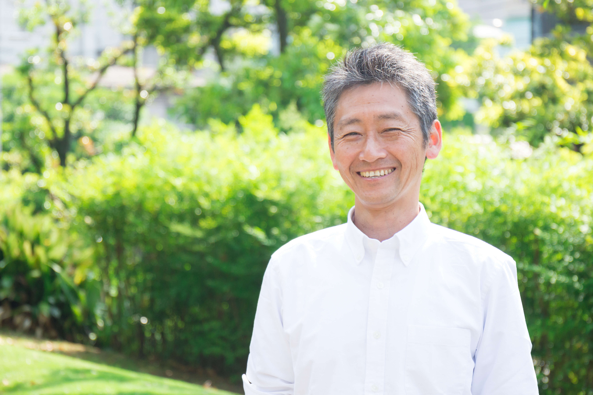
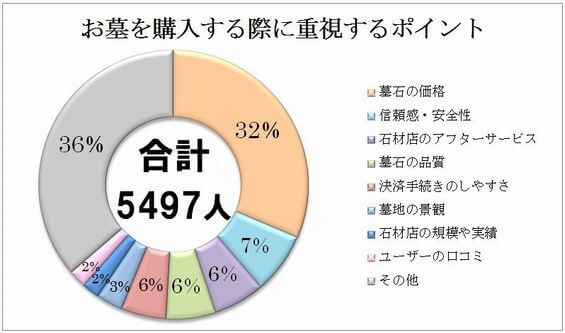

スクロール動画
SP版
PC版
解説
作品概要
このサイトは実家石材店のコーポレートサイトです。
作品URL
https://uraura-design.site/uraki-sekizai/
制作期間
12日間
制作範囲
企画・デザイン・コーディング
使用スキル
Photoshop・Premiere Pro・XD・html・SCSS(BEM)・JavaScript(jQuery)
リニューアルページの目的
1.納骨や改装といったお墓周りのお問い合わせ件数を増やす
2.新規霊園購入のお問い合わせ件数を増やす
仮想リニューアルの目標
・お問い合わせ件数を増やす。
コーディングで意識したこと
BEMに従ったSCSSを用いたCSS設計
命名規則に則ったclass名の記述を行うことで、後の修正やCSSの可読性を高めること、また再利用できるところは再利用できるよう意識しました。
レイアウトが崩れないレスポンシブ対応
Hover要素についてはモバイル端末で誤作動が起きてしまう可能性があったため、モバイル端末では影響がないように設定
浦木石材の基本情報
・埼玉県朝霞市を拠点とする明治創業の老舗石材店
・朝霞市周辺の霊園・お寺での施工実績あり
・墓石の施工において下請け業者への依頼は一切なし
・お客様のご案内から工事に至るまで社長1人が基本行う
・「利益<お客様の思い」を優先
・見えないところも丁寧に施工
・明治創業。現社長は4代目
ペルソナ設定①
前提
ペルソナ①は既に市内霊園で顧客となっている方からの納骨依頼を想定しました。
年齢・性別
お墓の購入きっかけが倍増する年代が50代〜60代。理由は両親の死。このことから納骨依頼も同年代で行われると想定。これらのことからペルソナは50代〜60代を想定。
仏事に関する悩み
仏事に関して最も悩んだ悩みのうち、法要・法事に関する悩みは18.3%で2位、1位は葬儀ということからなくなった後の手続きに関して悩みを多く抱えていることを想定。
手続きについては霊園に相談していると仮定（既存顧客の中で納骨の依頼は少なく、多くの納骨は霊園が行っているため。）
ペルソナ像
上記で説明した理由から下記をペルソナ像①とした。

浅川拓郎さん（52歳）
・埼玉県朝霞市出身
・朝霞市内の霊園に実家のお墓あり（建墓は浦木石材が実施）
・仏事に関して悩みを抱えている。
・親がなくなったため、納骨を行う予定
フロー
ペルソナ①がお問い合わせするまでのフローは下記を想定。
なお納骨の相談が現状霊園に流出してしまっていることから、それ以前に「法要・納骨の相談＝浦木石材」という認知をしていただくために、定期的に既存顧客に対してダイレクトメッセージを送信する試作も今回から実施する。
①両親がなくなったため葬儀や法要（納骨）の手続きの準備を行う。
②3,4ヶ月に1回刊行される浦木石材の会報誌から納骨に関する記述を思い出す。
③電話もしくはWebのフォームから納骨に関してお問い合わせを行う。
ペルソナ設定②
前提
ペルソナ②は市営霊園の抽選にあたり新規でお墓を購入する方を想定。
※市営霊園の購入には遺骨を持っていることが条件のため、
年齢・性別
お墓の購入きっかけが倍増する年代が50代〜60代。理由は両親の死。このことから納骨依頼も同年代で行われると想定。これらのことからペルソナは50代〜60代を想定。
お墓を購入するときに重要視するポイント
お墓を購入する時に重要視されるポイント（アンケート結果）は下記のグラフのようになっている。上位3つは「墓石の価格」32%、「信頼感・安全性」7%、「石材店のアフターサービス」6%、となっていることから今回のペルソナが重要視するポイントとして「価格」「信頼感・安全性」「アフターサービス」を想定する。
※墓石コネクトより引用
ペルソナ像
上記で説明した理由から下記をペルソナ像②とした。
綿谷浩一郎さん（55歳）
・埼玉県新座市在住
・両親の死をきっかけに墓石の購入を決意
・市営霊園の抽選に当選。これから墓石購入
・お墓選びにおいて重要視するポイントは「価格」「信頼感・安全性」「アフターサービス」。
フロー
ペルソナ①がお問い合わせするまでのフローは下記を想定
①市営霊園の抽選会でもらう石材店リストを確認。
②リストの一番上に載っている「浦木石材」をネットで検索。
③Webサイトにアクセス。
④石材店を選ぶ理由の上位3つにあたる「価格について」や「どんな石材店なのか（信頼度）」、「アフターフォローの有無」を確認。
⑤お問い合わせフォームからお問い合わせ。
コンセプト
設定するにあたり
デザイン（レイアウト・ワイヤーフレーム）を考えるにあたりキーワードを選定しました。まず始めに今回企業情報や父親の働く姿を見てきたイメージから【浦木石材】を人に例えてみました。すると下記のようなイメージが湧きました。
・相手思い（お金のないお客様でも最大限良いものを建てられるよう寄り添う父の姿から）
・親切に相談に乗ってくれる（お客様がわからないことがあれば、自宅に伺って丁寧に説明する姿勢から）
・職人気質（お客様には気付いてもらえない見えないところも丁寧に施工していくため。こだわりの強さから連想）
そして上記のイメージから下記のようなキーワードを考えました。
・どんなお客様にでも最大限の価値提供をする人を連想させる『真面目・責任感』
・親切で優しく相手想いな人を連想させる『親切・丁寧・信頼』
・見えない所にもこだわる職人を連想させる『信念』
以上のキーワードを下にデザインを作成いたしました。
ワイヤーフレーム
ペルソナの情報会社の特徴から【親身なって対応してくれる信頼・安心できる石屋さん】を伝えることを念頭に下記のようなワイヤーフレームを作成しました。
親身な姿勢、信頼できる相手をイメージしてもらうために
Firstviewではご家族を亡くされた方を想定し、「これからお墓を買う」という大きな決断をされるお客様へ寄り添うメッセージを記載。
信頼できる石屋さんであることを伝えるために
新規墓石購入者がお墓選びにて重要視するポイントである「価格」「信頼感・安全性」「アフターサービス」を最優先で伝え、ひと目で伝わるようにコンパクトにまとめました。
それでもなお、初めての方には分かりにくい内容のため、社長自らが各項目について説明した動画を掲載することで、信頼感や安心感を伝えることを意識しました。
アフターフォローを含めた各種サービスを伝えるために
浦木石材が実施している建墓以外のサービスについてひと目でわかるようにコンパクトにまとめました。
デザイン
上記のワイヤーフレーム、キーワードを基に下記のデザインを作成しました。
職人かつ相手に寄り添うイメージを伝えるために
サイトのメインカラーには和風で誠実感のあるイメージを伝えるために深い紺色（#04436D）を選択。
和・信頼感のイメージを伝えるために
タイトルやアクセントになるところには【Noto Serif JP】を使用することで和のイメージや信頼感、寄り添うイメージを持たせました。
ご年配の方でも見やすくするために
フォントには可読性の高い【Noto Sans JP】を使用。サイト全体の文章のFont-weightを500と高めに設定しました。
真面目さを伝えるために
写真やカードについては全て四角形を使用。キチッとしたイメージを持たせ誠実さを伝えることを意識しました。
サービスを分かりやすく伝えるために
イメージしにくい各種サービスについて、アイコンを添えることで視覚的にそれぞれのサービスを分かりやすくすることを意識しました。
短調にならないように
誠実さとのバランスを見て、「浦木石材が選ばれる理由」エリアが短調にならぬよう、お墓の象徴である「石」のテクスチャを配置し、コンテンツにリズム感を持たせました。